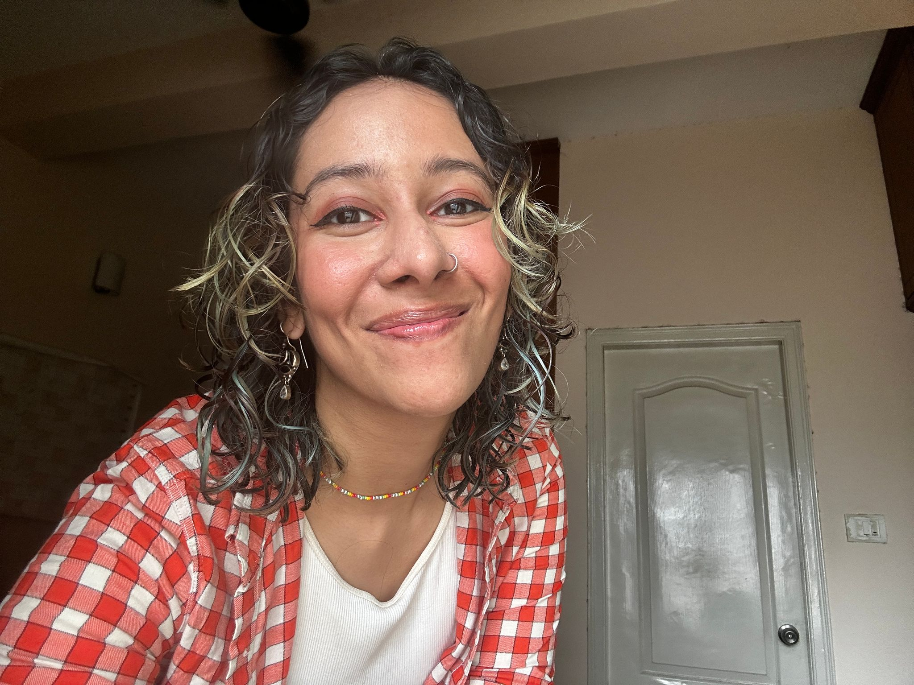
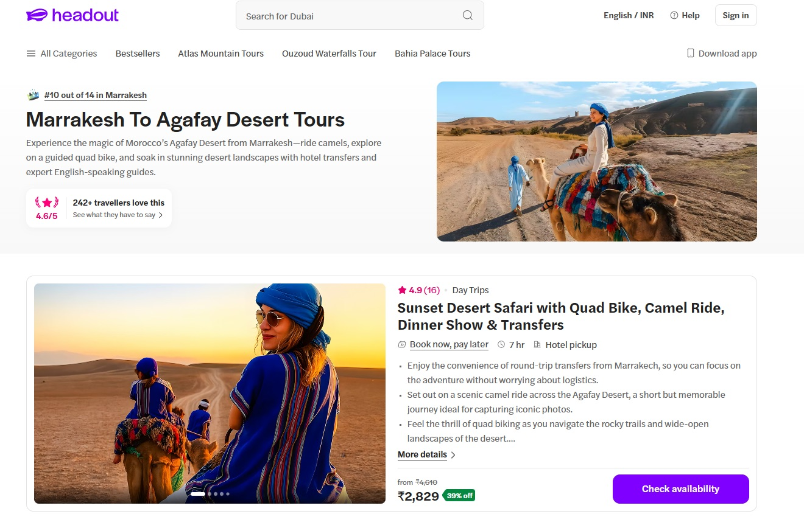
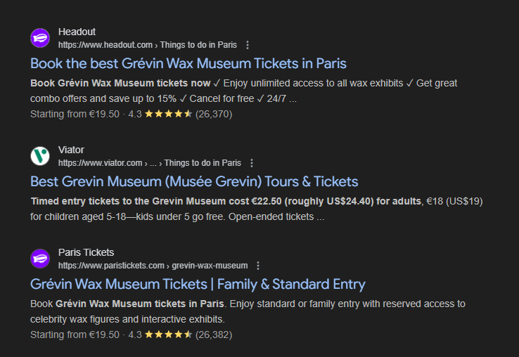

01
First thing you offer
What it is, who it suits, and what someone walks away with.
Writer & Creative Strategist
Hi, I’m Saranyaa. I write things, make things, and occasionally overthink why people do the things they do.
My work sits somewhere between storytelling, strategy, psychology, culture, and the internet. I’ve worked across content, brand, social, and growth for startups and creative teams, with a particular interest in health, technology, women’s health, sports, and whatever strange corner of the internet currently has my attention.
I studied psychology and journalism, so naturally I’m obsessed with both what people say and why they say it.
Here’s a collection of things I’ve made, written, built, and been mildly obsessed with.

Four places where I’ve shaped how something sounded, looked, and landed.

Brand · Social · Content · Product Marketing · Influencer Marketing
Communication and narrative-building for a generative AI video startup — product marketing, launch narrative, and creator partnerships.
Read the case study →
By the numbers
Shorter pieces and side projects — the things that do not need a whole case study behind them.

Product design
A UI prototype for finding and booking a therapist — screens, flow and copy, designed end to end in Figma.
Figma walkthrough, PDF →
Newsletter
Personal essays on growth, therapy, films and the small things — written and published on my own schedule.
Read on Substack →
Writing in public
Three thousand people follow along while I think out loud. One post on postcards quietly reached 64.7K.
@holasaranyahere →The things I make when nobody is briefing me.
Photography
Portraits of people, documented on a dedicated photography account.
Instagram →Postcards
Custom postcards designed and sent during travels and as a yearly tradition, combining photography, illustration and personal storytelling.
2024 edition, PDF →Film
I love films and watch a lot of them, and sometimes I write about them too. This is where I log everything.
Everything I watch →Short placeholder line about who you work with and how. Two sentences at most.
01
What it is, who it suits, and what someone walks away with.
02
What it is, who it suits, and what someone walks away with.
03
What it is, who it suits, and what someone walks away with.
04
What it is, who it suits, and what someone walks away with.
Thank you for going through my portfolio. If you’re interested in working together, here’s how you can reach me.
Brand · Social · Content · Product Marketing
Communication and narrative-building for a generative AI video startup.
I joined Morphic as a Communication & Narrative Operator, working across product marketing, brand communication, creator partnerships, and written content. My role sat at the intersection of strategy and execution: shaping how we talked about the product, building narratives around launches and campaigns, and getting those stories in front of the right audiences.
The Workflows launch ran across the founder’s personal account, the brand’s social channels, LinkedIn, and email — one narrative, retuned for each place it landed.


I researched 300+ creators, looking at average views, posting consistency, audience demographics, country, and overall audience fit. I used creator analytics tools to understand whether someone had a genuinely engaged audience rather than just a big follower count.
We offered creators a combination of affiliate partnerships and paid collaborations. My outreach was personalised. I referenced 2 to 3 of their own videos, shared relevant reference videos, and showed them how Morphic’s features could help them create something similar. The personalisation mattered. Creators responded because they could tell we had actually looked at their work rather than sending them a mass pitch.
One collaboration I particularly enjoyed was with @cyborggirll, an Indian creator making some really interesting work. We had a clear understanding of what we wanted to create together, which made the collaboration feel natural from the start. I especially enjoyed being able to work with a creator whose style and ideas felt fresh and different.
I would have built a more structured way to track creator performance and used those insights more consistently to shape future briefs. That would have helped us understand which features and creative approaches were actually resonating, and make a stronger case for what creators should showcase.
SEO · Content · Product Marketing
SEO and landing page copy for a global experiences marketplace.
I turned search queries into landing pages people could actually use. I researched keywords and search intent, figured out what information travellers were looking for, and used that to structure and write SEO-focused pages for experiences including the Grévin Museum and Agafay Desert.
Headout wanted to improve its organic visibility for high-intent searches around experiences and attractions, creating landing pages that could rank well while giving potential customers the information they needed to make a booking.
I handled SEO end to end across the Italy and France markets, covering keyword research, search intent, page structure, and landing page copy. I worked across the full page, from deciding what to target and how to structure it to writing the final copy.
I used tools like Keywords Everywhere and Google Search Console to research search volume and identify keywords with strong potential. I also looked at worldwide search data to understand what people were searching for across markets, rather than limiting the research to a single country.
I started with user intent. For a wax museum, for example, I thought about what someone would actually want to know before visiting, from how the experience compares to Madame Tussauds to practical details like timings. Headout provided a base template, but I customised the structure and content around each individual experience.
SEO taught me to get into the head of the customer and think beyond the obvious keywords. People search for everything from major questions to tiny practical details like timings, but those details can make or break a trip. Good SEO is ultimately about understanding what someone needs to know before they even know they need to ask.



Add whatever numbers you are allowed to share — ranking positions, traffic change, conversion lift, number of pages shipped. Even a rough range is worth more than no number. If everything is confidential, say so in one line; that reads as professional, not evasive.
Social · Video · Creative · Storytelling
Social and video storytelling for a media brand.
This case study has no content or imagery yet — it is currently the weakest link on the site. Either write it up using the outline below, or remove the card from the Selected work section until it is ready. An empty page costs you more than a missing one.
Reach, views, follower growth, or a qualitative outcome such as a shift in how the brand sounded.
Social · Community · Content · Events
Social, community, and events for a platform on women’s health and money.
You already have four strong visuals on this page to build on, and the colours of this entire site are borrowed from them. Add the narrative below and it becomes a proper case study rather than a gallery.


What were you trying to get across with this run of posts, and what did the audience respond to most? One paragraph turns these four images into an argument.